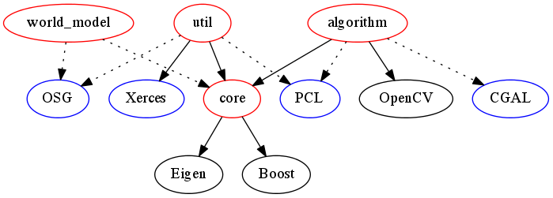

This page is a brief guide to get the first program running with the BRICS_3D library.
How to install
As an overview you will need to satisfy (at least) the required dependencies:
- Boost 1.37 (or higher)
- Eigen2 2.0.13 (or higher, Eigen3 is recommended)
- OpenCV 2.0 (or higher)
Then compile with:
$ mkdir build
$ cd build
$ cmake ..
$ make
$ sudo make install
Please see the Installation page for detailed instructions.
A first program
Create a file with name hallo_world.cpp and add the following lines:
#include <core/PointCloud3D.h>
#include <iostream>
int main(
int argc,
char **argv) {
brics_3d::PointCloud3D* myPointCloud = new brics_3d::PointCloud3D();
myPointCloud->addPoint(brics_3d::Point3D(0,0,0));
myPointCloud->addPoint(brics_3d::Point3D(1,0,0));
myPointCloud->addPoint(brics_3d::Point3D(0,1,0));
myPointCloud->addPoint(brics_3d::Point3D(0,0,1));
std::cout << *myPointCloud;
delete myPointCloud;
}
Compiling and running the first program
Create a CMakeLists.txt file that contains the following lines:
CMAKE_MINIMUM_REQUIRED(VERSION 2.6)
PROJECT(BRICS_3D_hallo_world)
SET(CMAKE_MODULE_PATH "${CMAKE_SOURCE_DIR}/external/cmake_modules")
FIND_PACKAGE(BRICS_3D REQUIRED)
# add include directories (-I)
INCLUDE_DIRECTORIES(${BRICS_3D_INCLUDE_DIRS})
# add library directories (-L)
LINK_DIRECTORIES(${BRICS_3D_LINK_DIRECTORIES})
# compile and link the executables
ADD_EXECUTABLE(hallo_world hallo_world.cpp)
TARGET_LINK_LIBRARIES(hallo_world ${BRICS_3D_LIBRARIES})
Create a subfolder external/cmake_modules and copy over the FindBRICS_3D.cmake file from the BRICS_3D sources. It is located in external/cmake_moduled subfolder too.
$ mkdir build
$ cd build
$ cmake ..
$ make
the you can run the executable via typing:
You should retrieve an output like this:
0 0 0
1 0 0
0 1 0
0 0 1
Explanation of the first program
The header
#include <core/PointCloud3D.h>
includes the point cloud representation used within BRICS_3D. Then an empty point cloud is created by issuing
brics_3d::PointCloud3D* myPointCloud = new brics_3d::PointCloud3D();
This is cloud is then filled with four Cartesian points:
myPointCloud->addPoint(brics_3d::Point3D(0,0,0));
myPointCloud->addPoint(brics_3d::Point3D(1,0,0));
myPointCloud->addPoint(brics_3d::Point3D(0,1,0));
myPointCloud->addPoint(brics_3d::Point3D(0,0,1));
The point cloud can be then easily print out via streaming to cout:
std::cout << *myPointCloud;
Further examples and explanations can be found on the Examples page.
Compiling advanced projects
While the hello world example gives a quick entry into getting the first programm running, one should be aware of the fact that BRICS_3D is partitioned into a chunk of smaller libraries. Each of those libraries might have further dependencies e.g. the visualization class uses OpenSceneGraph (OSG) which in case you want to use the visualization you need to link to your application too.
BRICS_3D consists of the following (sub)libraries:
- brics3d_core The core library that has all the relevant data-types like brics_3d::PointCloud3D and all common code like the brics_3d::Logger for instance.
- brics3d_algorithm The library that contains 3D perception and modling algorithms as discussed in section in Introduction to the used algorithm taxonomy.
- brics3d_util Utility library with e.g. visualization and benchmarking facilities.
- brics3d_world_model The 3D world model implementation.
The depenency of these libraries are expressed in the following graph diagram. The red nodes reprent the BRICS_3D libraries, while the black nodes indicate the external dependencies. Blue nodes illustrate optional libraries with their dependencies indicated by the dotted lines. In short terms all BRICS_3D libraries depend on brics3d_core while further other external dependencies might be involved.

This structure has inplications on the corretly added and ordered libraries to be linked to the application. While liking BRICS_3D to an application brics_3d_core needs to be linked first (which means it will be supplied to the gcc linker last!). However the FindBRICS_3D.cmake script provides the variable ${BRICS_3D_LIBRARIES} containing all BRICS_3D libraries in the correct order.
For a new project that makes use of BRICS_3D it is recommended to follws thees steps:
- Create a new folder and copy over the external/cmake_modules from BRICS_3D. It contains all relevant CMake scripts to resolve the BRICS_3D and its dependencies.
- Create an approriate top level CMake file as shown below that searches for dependencies and adds them to the include and linker paths.
- Create an executable and link the needed dependencies.
CMAKE_MINIMUM_REQUIRED(VERSION 2.6)
PROJECT(BRICS_3D_example_application)
SET(CMAKE_MODULE_PATH "${CMAKE_SOURCE_DIR}/external/cmake_modules")
FIND_PACKAGE(BRICS_3D REQUIRED)
FIND_PACKAGE(Eigen REQUIRED)
FIND_PACKAGE(Boost COMPONENTS thread)
FIND_PACKAGE(OpenCV REQUIRED)
FIND_PACKAGE(OpenSceneGraph COMPONENTS osgGA osgUtil osgViewer) #optional but recommented
FIND_PACKAGE(Xerces) # optional
ADD_DEFINITIONS(-DEIGEN3) # Here we use Eigen3 instead of Eigen2 (recommended)
# add include directories (-I)
INCLUDE_DIRECTORIES(
${BRICS_3D_INCLUDE_DIRS}
${EIGEN_INCLUDE_DIRS}
${Boost_INCLUDE_DIR}
${OPENCV_INCLUDE_DIR}
${OPENSCENEGRAPH_INCLUDE_DIRS}
)
# add library directories (-L)
LINK_DIRECTORIES(
${BRICS_3D_LINK_DIRECTORIES}
${OpenCV_LINK_DIRECTORIES}
)
# compile and link the executables
ADD_EXECUTABLE(example_application example_application.cpp)
TARGET_LINK_LIBRARIES(example_application
${BRICS_3D_LIBRARIES}
${XERCES_LIBRARIES}
${OSG_LIBRARY_DEBUG}
${OSGGA_LIBRARY_DEBUG}
${OSGVIEWER_LIBRARY_DEBUG}
${OpenCV_LIBRARIES}
${Boost_LIBRARIES}
)
Troubleshooting linker problems
- The BRICS_3D library cannot be found: In case it is not installed to the systems default folders set the following environment varibale:
export BRICS_3D_DIR=<path_to_brics_3d>
- The ${BRICS_3D_LIBRARIES} variable remains empty. Clear the CMake cache and retry.